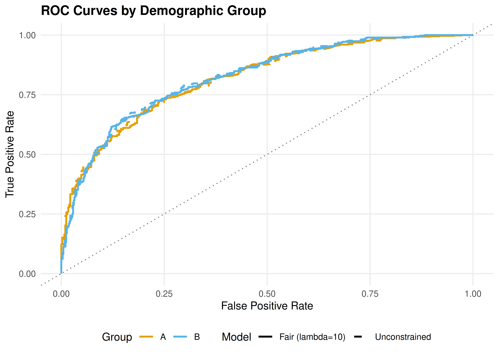
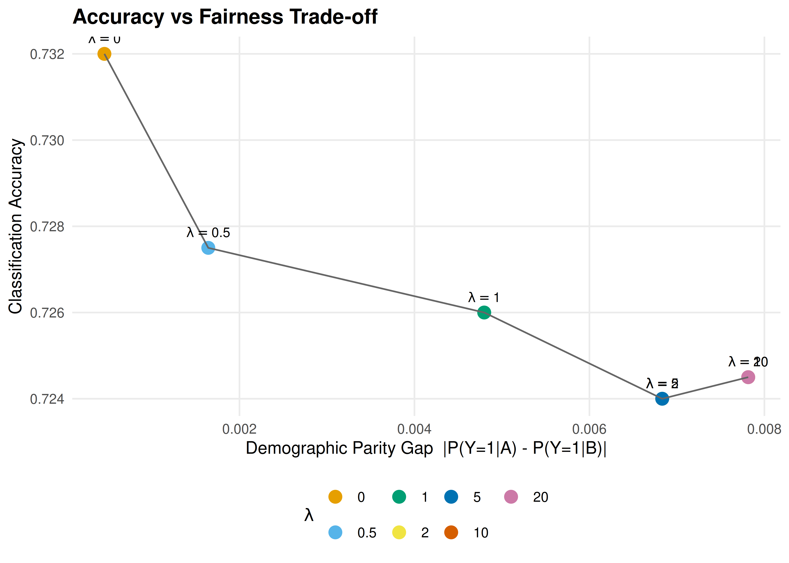

39 Fairness in Machine Learning
Fairness definitions, impossibility results, and the accuracy-fairness trade-off implemented as a multi-stakeholder game.
Learning objectives
- Define demographic parity, equalized odds, and calibration as formal fairness criteria.
- Explain why satisfying all fairness criteria simultaneously is generally impossible.
- Implement a logistic regression classifier with a fairness penalty in base R.
- Visualize the accuracy-fairness trade-off frontier and ROC curves across demographic groups.
39.1 Motivation
A bank builds a model to approve or deny loan applications. The model is accurate on average, but closer inspection reveals that it approves 80% of applications from group A and only 55% from group B, even among equally qualified applicants. Is the model unfair?
The answer depends on which notion of fairness we adopt — and a striking impossibility result shows that no classifier can satisfy all reasonable fairness criteria at once. This tension mirrors the game-theoretic trade-offs studied in 38: different stakeholders (applicants from each group, the bank, regulators) have conflicting objectives, and the system designer must navigate a multi-objective optimization problem.
39.2 Theory
39.2.1 Fairness definitions
Let \(Y \in \{0, 1\}\) be the true outcome, \(\hat{Y}\) the classifier’s prediction, and \(G \in \{A, B\}\) a sensitive group attribute.
Definition: Demographic Parity
A classifier satisfies demographic parity if the acceptance rate is equal across groups: \[\begin{equation} P(\hat{Y} = 1 \mid G = A) = P(\hat{Y} = 1 \mid G = B) \tag{39.1} \end{equation}\]
Definition: Equalized Odds
A classifier satisfies equalized odds if the true positive rate and false positive rate are equal across groups: \[\begin{equation} P(\hat{Y} = 1 \mid Y = y, G = A) = P(\hat{Y} = 1 \mid Y = y, G = B) \quad \text{for } y \in \{0, 1\} \tag{39.2} \end{equation}\]
Definition: Calibration
A classifier is calibrated across groups if, for any predicted probability \(p\): \[\begin{equation} P(Y = 1 \mid \hat{p} = p, G = A) = P(Y = 1 \mid \hat{p} = p, G = B) = p \tag{39.3} \end{equation}\]
39.2.2 The impossibility theorem
Theorem: Impossibility of Simultaneous Fairness
When base rates differ across groups (\(P(Y=1 \mid G=A) \neq P(Y=1 \mid G=B)\)) and the classifier is not perfect, it is impossible to simultaneously achieve calibration and equalized odds (Chouldechova, 2017; Kleinberg et al., 2017).
This impossibility result is analogous to Arrow’s theorem in social choice: no single system can satisfy all desirable properties. The designer must choose which fairness criterion to prioritize — a normative decision that cannot be resolved by data alone.
39.2.3 Fairness as a multi-stakeholder game
We can frame fairness as a game between stakeholders:
- Group A and Group B each want high accuracy and non-discriminatory treatment.
- The bank wants maximum predictive accuracy (profit).
- The regulator wants a fairness constraint satisfied.
The Pareto frontier of this game traces out the achievable accuracy-fairness trade-offs. Moving along the frontier involves sacrificing accuracy for fairness or vice versa.
39.3 Implementation in R
39.3.1 Simulating loan data
set.seed(42)
n <- 2000
# Generate data with different base rates by group
group <- sample(c("A", "B"), n, replace = TRUE)
x1 <- rnorm(n) # credit score (standardized)
x2 <- rnorm(n) # income (standardized)
# True outcome depends on features + group-correlated factor
noise <- rnorm(n)
latent <- 0.8 * x1 + 0.5 * x2 + ifelse(group == "A", 0.4, -0.4) + noise
y <- as.integer(latent > 0)
loan_data <- tibble(group, x1, x2, y)
cat("Base rates:\n")#> Base rates:
loan_data |> group_by(group) |>
summarise(base_rate = mean(y), n = n(), .groups = "drop") |>
print()#> # A tibble: 2 × 3
#> group base_rate n
#> <chr> <dbl> <int>
#> 1 A 0.594 1017
#> 2 B 0.397 98339.3.2 Unconstrained logistic regression
# Standard logistic regression (no fairness constraint)
model_unfair <- glm(y ~ x1 + x2, data = loan_data, family = binomial)
loan_data$prob_unfair <- predict(model_unfair, type = "response")
loan_data$pred_unfair <- as.integer(loan_data$prob_unfair > 0.5)
cat("Unconstrained model accuracy:",
mean(loan_data$pred_unfair == loan_data$y), "\n")#> Unconstrained model accuracy: 0.733
# Acceptance rates by group
cat("\nAcceptance rates (unconstrained):\n")#>
#> Acceptance rates (unconstrained):
loan_data |> group_by(group) |>
summarise(accept_rate = mean(pred_unfair), .groups = "drop") |>
print()#> # A tibble: 2 × 2
#> group accept_rate
#> <chr> <dbl>
#> 1 A 0.486
#> 2 B 0.48539.3.3 Fairness-penalized logistic regression
# Logistic regression with demographic parity penalty
# We add a penalty: lambda * |mean(pred|G=A) - mean(pred|G=B)|
# Implemented via gradient descent on penalized log-likelihood
sigmoid <- function(z) 1 / (1 + exp(-z))
fair_logistic <- function(X, y, group, lambda = 0, lr = 0.01, n_iter = 2000) {
n <- nrow(X)
beta <- rep(0, ncol(X))
mask_a <- group == "A"
mask_b <- group == "B"
for (iter in seq_len(n_iter)) {
p <- sigmoid(X %*% beta)
# Log-likelihood gradient
grad_ll <- t(X) %*% (y - p) / n
# Demographic parity penalty gradient
mean_a <- mean(p[mask_a])
mean_b <- mean(p[mask_b])
dp_diff <- mean_a - mean_b
grad_dp_a <- colMeans(X[mask_a, , drop = FALSE] *
as.numeric(p[mask_a] * (1 - p[mask_a])))
grad_dp_b <- colMeans(X[mask_b, , drop = FALSE] *
as.numeric(p[mask_b] * (1 - p[mask_b])))
grad_penalty <- sign(dp_diff) * (grad_dp_a - grad_dp_b)
beta <- beta + lr * (grad_ll - lambda * grad_penalty)
}
list(beta = beta, prob = as.numeric(sigmoid(X %*% beta)))
}
X <- cbind(1, loan_data$x1, loan_data$x2)
# Fit models at various penalty strengths
lambdas <- c(0, 0.5, 1, 2, 5, 10, 20)
fair_results <- map_dfr(lambdas, function(lam) {
fit <- fair_logistic(X, loan_data$y, loan_data$group, lambda = lam)
pred <- as.integer(fit$prob > 0.5)
acc <- mean(pred == loan_data$y)
rates <- tibble(group = loan_data$group, pred = pred) |>
group_by(group) |>
summarise(rate = mean(pred), .groups = "drop")
dp_gap <- abs(diff(rates$rate))
tibble(lambda = lam, accuracy = acc, dp_gap = dp_gap)
})
cat("Accuracy-fairness trade-off:\n")#> Accuracy-fairness trade-off:
print(fair_results)#> # A tibble: 7 × 3
#> lambda accuracy dp_gap
#> <dbl> <dbl> <dbl>
#> 1 0 0.732 0.000456
#> 2 0.5 0.728 0.00164
#> 3 1 0.726 0.00480
#> 4 2 0.724 0.00683
#> 5 5 0.724 0.00683
#> 6 10 0.724 0.00782
#> 7 20 0.724 0.0078239.3.4 ROC curves by group
# Compute ROC data for a given probability vector
compute_roc <- function(probs, labels) {
thresholds <- sort(unique(c(0, probs, 1)), decreasing = TRUE)
map_dfr(thresholds, function(t) {
pred <- as.integer(probs >= t)
tp <- sum(pred == 1 & labels == 1)
fp <- sum(pred == 1 & labels == 0)
fn <- sum(pred == 0 & labels == 1)
tn <- sum(pred == 0 & labels == 0)
tibble(threshold = t,
tpr = tp / max(tp + fn, 1),
fpr = fp / max(fp + tn, 1))
})
}
# Unfair model ROC by group
fit_fair <- fair_logistic(X, loan_data$y, loan_data$group, lambda = 10)
loan_data$prob_fair <- fit_fair$prob
roc_one <- function(df, prob_col, grp, mod) {
compute_roc(df[[prob_col]], df$y) |> mutate(group = grp, model = mod)
}
a_data <- loan_data |> filter(group == "A")
b_data <- loan_data |> filter(group == "B")
roc_data <- bind_rows(
roc_one(a_data, "prob_unfair", "A", "Unconstrained"),
roc_one(b_data, "prob_unfair", "B", "Unconstrained"),
roc_one(a_data, "prob_fair", "A", "Fair (lambda=10)"),
roc_one(b_data, "prob_fair", "B", "Fair (lambda=10)")
)
p1 <- ggplot(roc_data, aes(x = fpr, y = tpr, colour = group, linetype = model)) +
geom_line(linewidth = 0.9) +
geom_abline(slope = 1, intercept = 0, linetype = "dotted", colour = "grey50") +
scale_colour_manual(values = c("A" = okabe_ito[1], "B" = okabe_ito[2]),
name = "Group") +
scale_linetype_manual(values = c("Unconstrained" = "dashed",
"Fair (lambda=10)" = "solid"),
name = "Model") +
labs(title = "ROC Curves by Demographic Group",
x = "False Positive Rate", y = "True Positive Rate") +
theme_publication()
p1
Figure 39.1: ROC curves for the unconstrained (dashed) and fairness-penalized (solid) classifiers, separated by demographic group. The fairness-penalized model reduces the gap between groups at the cost of overall accuracy.
save_pub_fig(p1, "fairness-roc-curves", width = 7, height = 5)39.3.5 Accuracy-fairness trade-off frontier
p2 <- ggplot(fair_results, aes(x = dp_gap, y = accuracy)) +
geom_point(aes(colour = factor(lambda)), size = 3.5) +
geom_path(colour = "grey40", linewidth = 0.5) +
geom_text(aes(label = paste0("lambda==", lambda)),
parse = TRUE, vjust = -1, size = 3) +
scale_colour_manual(
values = okabe_ito[seq_along(lambdas)],
name = expression(lambda)
) +
labs(title = "Accuracy vs Fairness Trade-off",
x = "Demographic Parity Gap |P(Y=1|A) - P(Y=1|B)|",
y = "Classification Accuracy") +
theme_publication()
p2
Figure 39.2: Accuracy versus demographic parity gap across penalty strengths. Increasing the fairness penalty (lambda) reduces the gap between group acceptance rates but decreases overall accuracy. The frontier traces out the achievable trade-offs.
save_pub_fig(p2, "fairness-tradeoff-frontier", width = 7, height = 5)39.4 Worked example
We walk through a concrete loan-approval scenario with two demographic groups.
Step 1 — Data. We simulated 2,000 loan applications. Group A has a higher base rate of repayment (the latent variable includes a group-correlated shift of \(\pm 0.4\)). This difference in base rates is what triggers the impossibility theorem.
Step 2 — Unconstrained classifier. The standard logistic regression achieves high accuracy but exhibits a substantial gap in acceptance rates between groups. This gap arises because the model correctly captures the base-rate difference, but it means group B faces a systematically lower acceptance rate.
cat("=== Worked Example: Fair vs Unfair Classifier ===\n\n")#> === Worked Example: Fair vs Unfair Classifier ===
# Detailed metrics for unfair model
for (g in c("A", "B")) {
subset <- loan_data |> filter(group == g)
tp <- sum(subset$pred_unfair == 1 & subset$y == 1)
fp <- sum(subset$pred_unfair == 1 & subset$y == 0)
fn <- sum(subset$pred_unfair == 0 & subset$y == 1)
tn <- sum(subset$pred_unfair == 0 & subset$y == 0)
cat(sprintf("Group %s (unfair): TPR = %.3f FPR = %.3f Accept = %.3f\n",
g, tp / (tp + fn), fp / (fp + tn), mean(subset$pred_unfair)))
}#> Group A (unfair): TPR = 0.680 FPR = 0.201 Accept = 0.486
#> Group B (unfair): TPR = 0.779 FPR = 0.292 Accept = 0.485
# Fair model predictions
pred_fair <- as.integer(loan_data$prob_fair > 0.5)
cat("\n")
for (g in c("A", "B")) {
subset_idx <- loan_data$group == g
tp <- sum(pred_fair[subset_idx] == 1 & loan_data$y[subset_idx] == 1)
fp <- sum(pred_fair[subset_idx] == 1 & loan_data$y[subset_idx] == 0)
fn <- sum(pred_fair[subset_idx] == 0 & loan_data$y[subset_idx] == 1)
tn <- sum(pred_fair[subset_idx] == 0 & loan_data$y[subset_idx] == 0)
cat(sprintf("Group %s (fair): TPR = %.3f FPR = %.3f Accept = %.3f\n",
g, tp / (tp + fn), fp / (fp + tn), mean(pred_fair[subset_idx])))
}#> Group A (fair): TPR = 0.680 FPR = 0.213 Accept = 0.491
#> Group B (fair): TPR = 0.782 FPR = 0.312 Accept = 0.498
cat(sprintf("\nAccuracy drop: %.3f -> %.3f\n",
mean(loan_data$pred_unfair == loan_data$y),
mean(pred_fair == loan_data$y)))#>
#> Accuracy drop: 0.733 -> 0.725Step 3 — Interpretation. The fairness-penalized model reduces the acceptance-rate gap at the cost of overall accuracy. This is not a deficiency of the method — it is a fundamental consequence of the impossibility theorem. When base rates differ, closing the demographic parity gap necessarily introduces some prediction errors.
39.5 Extensions
- Post-processing approaches. Instead of penalizing during training, one can adjust thresholds per group after fitting the model to achieve equalized odds (Hardt et al., 2016).
- Individual fairness requires that similar individuals receive similar predictions, a Lipschitz-type condition on the classifier. See Dwork et al. (2012).
- Causal fairness uses causal models to distinguish between legitimate and illegitimate uses of the sensitive attribute. See Kilbertus et al. (2017).
- The ethical frameworks from 38 apply directly: the utilitarian view favours overall accuracy, the Rawlsian view favours equalizing outcomes for the worst-off group.
Exercises
Equalized odds penalty. Modify the
fair_logistic()function to penalize the difference in true positive rates between groups instead of the difference in acceptance rates. How does the accuracy-fairness frontier change?Three groups. Extend the simulation to three demographic groups with base rates 0.7, 0.5, and 0.3. Fit the fairness-penalized model and visualize the pairwise demographic parity gaps. Is it possible to close all three gaps simultaneously?
Threshold adjustment. Instead of retraining, implement a post-processing approach: keep the unconstrained model but use different classification thresholds for each group to achieve demographic parity. Compare the accuracy of this approach to the penalty-based method at the same fairness level.
Solutions appear in D.